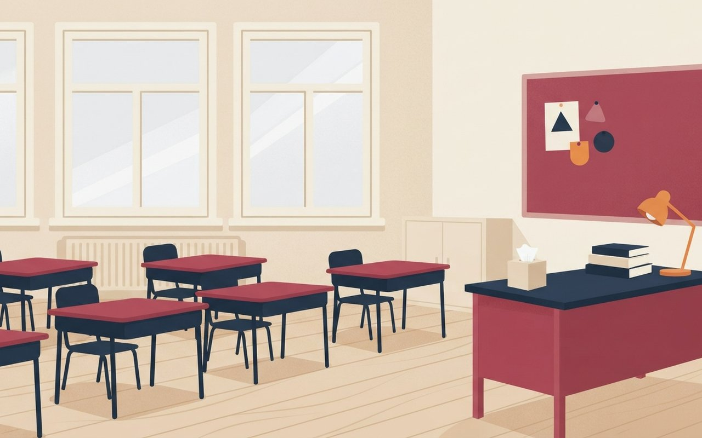
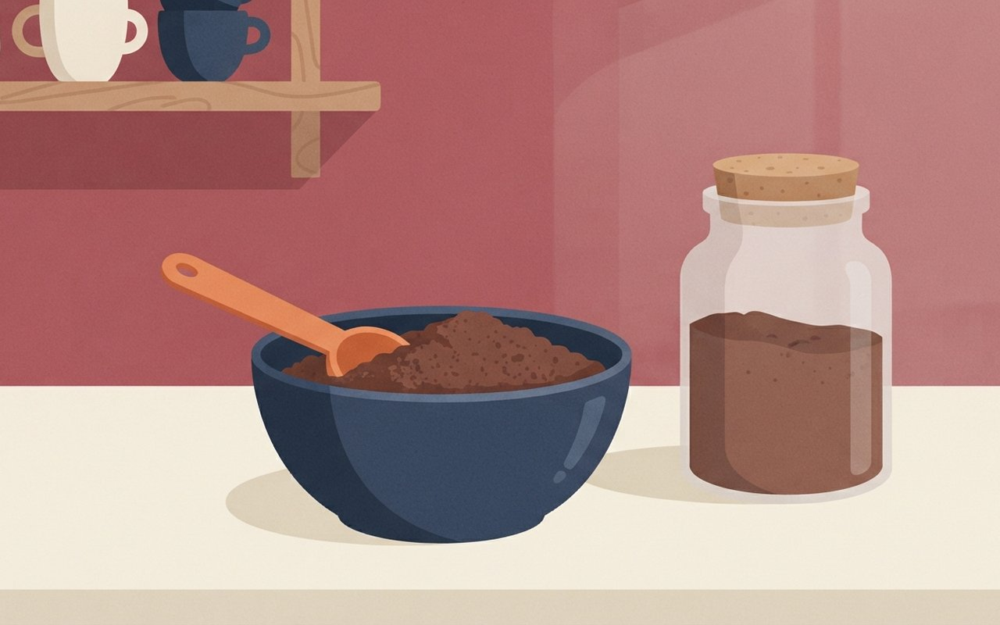

🎧 낭독 원고 보기
11월 17일 화요일, 헬스 브리프입니다.
초등학생 나이대 독감 환자가 외래 1,000명당 73.5명까지 늘었습니다. 45주차 전체 의사환자는 28.9명으로 3주 연속 증가해 유행기준 12.9명의 두 배를 넘었습니다. 예방접종률은 65세 이상 73.7%, 14세 이하 58.5%입니다.
수능을 앞두고 이른바 공부 잘하는 약을 불법으로 판다는 온라인 게시물 571건이 적발됐습니다. ADHD 치료제 메틸페니데이트가 553건, 심장약 프로프라놀롤 같은 수능약·면접약이 18건입니다. 가족이 처방받은 약을 받아 먹는 것도 불법이고, 불안·어지럼 같은 부작용이 생길 수 있습니다.
60세 이상 189만여 명을 추적한 국내 연구에서 팔다리 근육량이 하위 25%인 사람은 알츠하이머 위험이 남성 34%, 여성 27% 높았습니다. 관찰 연구라 근육이 줄어서 생긴다고 단정할 수는 없습니다.
투석 전 만성콩팥병 환자 1,861명을 분석한 연구에서는 단백질을 적게 먹을수록 말기신부전 위험이 42%, 사망 위험이 117% 높았습니다. 연구진은 고단백 식단을 권하는 게 아니라며, 섭취량은 의료진과 정하라고 했습니다.
스페인산 코코아분말에서 약 16밀리미터 철사가 나와 판매가 중단되고 회수에 들어갔습니다. 소비기한 2029년 4월 23일 제품이고, 갖고 있다면 구입처에 반품하면 됩니다.
오늘부터 예방접종 피해보상을 대리인을 통해 신청할 수 있습니다. 그동안은 본인이 직접 신청해야 했습니다. 대리인 자격과 서류는 신청 전에 보건소나 질병청에 확인하세요.
이상 헬스 브리프였습니다. 진단·처방이 아니며, 증상이 있으면 의료진과 상담하세요.
感
독감 45주
독감 3주 연속 증가 — 45주 외래 1,000명당 28.9명, 7~12세는 73.5명
세계일보·메디컬데일리(11월 16일)에 따르면 45주차(11월 1~7일) 독감 의사환자 분율은 외래 1,000명당 28.9명이다. 42주 17.7명, 43주 19.2명, 44주 22.8명에 이어 3주 연속 늘었고, 질병관리청이 9월 11일 밝힌 올 절기 유행기준(12.9명)의 2배를 넘었다.
팸타임스(11월 17일)는 연령별로 7~12세 73.5명, 13~18세 52.2명이 가장 많다고 전했다. 13~18세는 전주 37.4명에서 39.6% 늘었다. 예방접종률은 11월 13일 기준 65세 이상 73.7%, 14세 이하 58.5%다(세계일보·메디컬데일리).
- 45주차외래 1,000명당 28.9명 · 3주 연속 증가
- 추이42주 17.7명 → 43주 19.2명 → 44주 22.8명 → 45주 28.9명
- 유행기준올 절기 12.9명
- 연령별7~12세 73.5명 · 13~18세 52.2명(전주 37.4명)
- 접종률65세 이상 73.7% · 14세 이하 58.5%(11/13 기준)
🩺 알고 보면 달라지는 것
증가 폭이 커지고 있다는 점이 지난주와 달라진 숫자다(44→45주 6.1명 증가). 학교에 다니는 자녀가 있거나 65세 이상 가족이 아직 접종 전이라면 접종 여부를 확인해 볼 만하다. 이 카드는 진단·처방이 아니며, 증상이 있으면 의료진과 상담하세요.
세계일보 11/16 — 45주 독감 팸타임스 11/17 — 연령별 질병청 9/11 — 유행기준
28.9명·추이·접종률은 세계일보(11/16)와 메디컬데일리(11/16, https://www.medicaldaily.co.kr/post/123840) 일치 · 유행기준 12.9명은 질병청 9/11 보도자료 · 연령별 73.5명·52.2명·37.4명·39.6%는 팸타임스(11/17) · 6.1명은 22.8→28.9 단순 계산 · 46주 수치는 이번 주 후반 공개 예정 (확인 2026-11-17)
독감 3주 연속 증가,
유행기준의 2배 넘어
45주차 독감 의사환자가 외래 1,000명당 28.9명으로 유행기준(12.9명)의 2배를 넘었어요. 7~12세는 73.5명이에요. 접종 전이라면 확인해 보세요.
42주:17.7|43주:19.2|44주:22.8|45주:28.9
73.5명|7~12세 · 연령별 최다(외래 1,000명당)
An empty elementary school classroom with small desks and a box of tissues on the teacher's desk, soft winter light through the window, flat illustration, no people, no text, no numbers, no logos

藥
식약처 온라인 점검
수능 앞 '공부 잘하는 약' 불법 판매 게시물 571건 적발 — ADHD 치료제 553건, 프로프라놀롤 등 18건
경향신문(11월 16일)에 따르면 식품의약품안전처는 10월 26~30일 SNS·웹사이트를 점검해 불법 의약품 판매·알선 게시물 571건을 적발했다. ADHD 치료제 메틸페니데이트가 553건, 프로프라놀롤 등 이른바 '수능약·면접약'이 18건이다. 심장약을 따로 점검한 것은 이번이 처음이다.
경향신문에 따르면 향정신성의약품을 사고팔거나 알선·투약하면 5년 이하 징역 또는 5천만 원 이하 벌금이고, 가족이 처방받은 약을 받아 먹는 것도 위반이다. 메틸페니데이트는 불안·두통·환각·심박수 증가, 프로프라놀롤은 졸음·어지럼증·서맥 같은 부작용이 있을 수 있다(경향신문).
- 점검10월 26~30일 · SNS·웹사이트
- 적발571건 = 메틸페니데이트 553건 + 프로프라놀롤 등 18건
- 처벌5년 이하 징역 또는 5천만 원 이하 벌금(향정 매매·투약)
- 주의가족이 처방받은 약 복용도 위반
🩺 알고 보면 달라지는 것
'집중력'·'긴장 완화'를 내세운 약은 처방 대상과 용량이 정해진 전문의약품이다. 시험 전 긴장이 심하다면 온라인에서 구하지 말고 진료를 받아 상담하는 것이 순서다. 이 카드는 진단·처방이 아니며, 증상이 있으면 의료진과 상담하세요.
경향신문 11/16 — 적발·부작용
571·553·18건·점검 기간·첫 심장약 점검·부작용·처벌·가족 처방 약은 경향신문(11/16) · 올해 누적치는 매체 간 확인이 안 돼 뺌 · 식약처 원문은 첨부파일이라 직접 읽지 못함 (확인 2026-11-17)
'공부 잘하는 약'
불법 판매 571건 적발
식약처가 수능을 앞두고 SNS 불법 판매 게시물을 찾아냈어요. ADHD 치료제가 553건이에요. 가족이 처방받은 약을 먹는 것도 불법이에요.
ADHD 치료제:553|심장약 등:18
향정 매매·투약 5년 이하 징역 / 5천만 원 이하 벌금
A student's desk at night with stacked textbooks, a desk lamp and a smartphone showing a large red prohibition sign over blurred pill icons, flat illustration, no people, no text, no numbers, no logos, no brand packaging
筋
치매 연구
근육량 하위 25%, 알츠하이머 위험 남 34%·여 27% 높았다 — 국내 60세 이상 189만 명 관찰 연구
클리닉저널·파이낸셜뉴스(11월 12일)에 따르면 인제대 일산백병원 신경과 정수진 교수팀은 2009~2015년 건강검진을 받은 60세 이상 1,897,197명을 2022년까지 추적해 국제학술지 Alzheimer's Research & Therapy 에 실었다. 팔·다리 골격근량(추정값) 하위 25%를 나머지 75%와 비교했다.
하위 25%의 알츠하이머 위험은 남성 34%, 여성 27% 높았다. 1,000인년당 발생은 남성 11.3명 대 5.1명, 여성 16.2명 대 7.0명이다. 혈관성 치매 위험도 남성 28%, 여성 23% 높았다. 관찰 연구라 근육 감소가 원인이라고 단정할 수 없고, 근육량은 직접 잰 값이 아니라 추정값이다.
- 대상60세 이상 1,897,197명 · 2009~2015년 검진, 2022년까지 추적
- 비교팔·다리 골격근량(추정) 하위 25% vs 나머지 75%
- 알츠하이머남성 34% · 여성 27% 높음
- 1,000인년당남성 11.3명 vs 5.1명 · 여성 16.2명 vs 7.0명
- 한계관찰 연구(인과 아님) · 근육량은 추정값
🩺 알고 보면 달라지는 것
이 연구는 '근육이 적은 사람에게서 알츠하이머가 더 많이 생겼다'는 연관을 보여 준다. '근력운동을 하면 치매를 막는다'는 뜻으로 읽으면 한 걸음 앞서 나간 것이다. 다만 근육량을 재 볼 기회가 있다면 확인해 볼 만하다. 이 카드는 진단·처방이 아니며, 증상이 있으면 의료진과 상담하세요.
클리닉저널 11/12 — 연구 결과 파이낸셜뉴스 11/12 — 연구 결과
대상 수·기간·학술지·34%/27%·1,000인년당 발생·혈관성 치매 28%/23%는 두 기사 일치 · 근육량 추정식은 기사에 없음 · 관찰 연구라는 한계는 기사 명시 (확인 2026-11-17)
근육량 적은 60세 이상,
알츠하이머 더 많았다
60세 이상 189만여 명을 추적했더니 근육량 하위 25%는 알츠하이머 위험이 남성 34%, 여성 27% 높았어요. 관찰 연구라 원인이라고 단정할 수는 없어요.
근육량 하위 25%|나머지 75% / 남성:11.3:5.1 / 여성:16.2:7.0
1,000인년당 알츠하이머 발생(명)
A quiet park path at dawn with a pair of light dumbbells and a water bottle resting on a wooden bench, autumn leaves, flat illustration, no people, no text, no numbers, no logos
腎
콩팥병 연구
만성콩팥병, 단백질 적게 먹을수록 말기신부전 42%·사망 117% 위험 높았다 — 투석 전 환자 1,861명
질병관리청 국립보건연구원 보도자료(11월 10일)에 따르면 9개 대학병원의 투석 전 만성콩팥병 성인 1,861명(KNOW-CKD 코호트, 2011~2024년)을 분석한 결과, 하루 단백질 섭취가 적을수록 투석·이식이 필요한 말기신부전 위험이 42%, 전체 사망 위험이 117% 높았다. 나이·성별·콩팥 기능·당뇨를 보정했고 JAMA Network Open 에 실렸다.
2024년 국제 지침(KDIGO)은 투석 전 환자에게 하루 체중 1kg당 약 0.8g을 권하고, 진행 위험이 있는 성인은 1.3g을 넘지 않도록 한다. 연구진은 고단백 식단을 권하는 것이 아니며 의사·임상영양사와 상의해 개인별로 정하라고 밝혔다. 관찰 연구이고 섭취량은 소변 검사로 추정했다.
- 대상투석 전 만성콩팥병 성인 1,861명 · 9개 대학병원
- 결과섭취 적을수록 말기신부전 42% · 사망 117% 위험 높음
- 권고(KDIGO 2024)체중 1kg당 약 0.8g · 진행 위험 성인 1.3g 넘지 않게
- 학술지JAMA Network Open
- 한계관찰 연구 · 섭취량은 소변 검사로 추정
🩺 알고 보면 달라지는 것
'콩팥이 나쁘면 고기를 끊어라'처럼 무조건 줄이는 것만 답은 아닐 수 있다는 연구다. 반대로 많이 먹으라는 뜻도 아니다. 콩팥병 진단을 받은 가족이 있다면 식단을 스스로 정하기보다 영양 상담을 받아 보자. 이 카드는 진단·처방이 아니며, 증상이 있으면 의료진과 상담하세요.
질병청 국립보건연구원 11/10 — 연구 결과
1,861명·9개 병원·기간·42%/117%·보정 변수·KDIGO 0.8g/1.3g·연구진 당부는 질병청 보도자료(11/10) 단일 공식 출처 · '낮은 섭취'의 g 기준은 자료에 없음 (확인 2026-11-17)
콩팥병, 단백질
무조건 줄이면 안 될 수도
투석 전 환자 1,861명을 분석했더니 단백질을 적게 먹을수록 말기신부전 위험이 42%, 사망 위험이 117% 높았어요. 섭취량은 의료진과 정하세요.
말기신부전 위험 증가:42|사망 위험 증가:117
단백질 적게 먹은 쪽 · 높아진 위험 비율
A balanced dinner plate with tofu, grilled fish and green vegetables on a wooden table beside a small notebook, warm light, flat illustration, no people, no text, no numbers, no logos
回
식약처 회수
스페인산 코코아분말에서 16mm 철사 — 소비기한 2029년 4월 23일 제품 판매 중단·회수
뉴스1·푸드투데이(11월 13일)에 따르면 식약처는 수입판매업체 ㈜선인이 들여온 스페인산 '코코아파우더'(코코아분말)에서 약 16mm 철사가 나와 판매를 중단하고 회수하도록 했다. 금속성 이물 기준(2mm 이하)의 8배 길이다.
대상은 소비기한이 2029년 4월 23일인 제품으로, 25kg 원료 제품과 1kg 소분 제품이며 총 수입량은 8,475kg이다. 갖고 있다면 사용을 멈추고 구입처에 반품하면 되고, 부정·불량식품 신고는 1399다.
- 제품코코아파우더(스페인산) · 수입판매 ㈜선인
- 사유약 16mm 철사 · 금속성 이물 기준 2mm 이하
- 대상소비기한 2029년 4월 23일 · 25kg·1kg 소분
- 수입량8,475kg
- 대응구입처 반품 · 신고 1399
🩺 알고 보면 달라지는 것
25kg 원료 제품이 함께 회수 대상이라 카페·베이커리 업소용으로 쓰였을 수 있다. 집에 1kg 소분 코코아분말이 있다면 포장의 소비기한이 2029년 4월 23일인지 확인해 보자. 이 카드는 진단·처방이 아니며, 증상이 있으면 의료진과 상담하세요.
뉴스1 11/13 — 회수 푸드투데이 11/13 — 회수
업체·제조국·16mm·기준 2mm·소비기한·수입량 8,475kg·반품은 두 기사 일치 · 1399는 푸드투데이 · 8배는 16÷2 계산 · 회수 등급은 확인 못 함 (확인 2026-11-17)
코코아분말에서 철사,
판매 중단·회수
스페인산 코코아분말에서 약 16mm 철사가 나와 회수에 들어갔어요. 소비기한 2029년 4월 23일 제품이면 구입처에 반품하세요.
16mm|금속 이물 기준(2mm 이하)의 8배
소비기한 2029년 4월 23일 제품 / 구입처에 반품
A ceramic bowl of cocoa powder with a measuring spoon on a kitchen counter, plain unbranded jar beside it, flat illustration, no people, no text, no numbers, no logos, no packaging

補
감염병예방법 시행령
예방접종 피해보상, 오늘부터 대리인 신청 가능 — 그동안은 본인이 직접 청구해야
질병관리청 보도자료(11월 17일)에 따르면 「감염병예방법 시행령·시행규칙」 개정안이 11월 17일부터 시행돼, 예방접종 등으로 피해를 입은 사람이 국가보상을 청구할 때 대리인을 통해 신청할 수 있게 됐다. 그동안은 본인이 직접 신청해야 했다.
질병청은 거동이 불편하거나 행정 절차에 익숙하지 않은 사람을 돕기 위한 것이라고 설명했다. 대리인 자격·구비 서류는 보도자료에 나오지 않았다. 같은 개정으로 방제는 생물학적 방법을 화학적 방법보다 먼저 쓰도록 순서가 바뀌었다.
- 시행2026년 11월 17일
- 바뀐 것예방접종 피해 국가보상 청구, 대리인 신청 가능
- 이전본인 직접 신청
- 미확인대리인 자격·구비 서류(보도자료에 없음)
- 함께 바뀐 것방제는 생물학적 방법 우선
🩺 알고 보면 달라지는 것
접종 뒤 이상반응으로 거동이 어려운 가족이 있었다면, 보상 청구를 가족이 대신 챙길 길이 열린 셈이다. 누가 대리인이 될 수 있는지와 서류는 신청 전에 보건소나 질병청(043-719-7132)에 확인하자. 이 카드는 진단·처방이 아니며, 증상이 있으면 의료진과 상담하세요.
질병청 11/17 — 감염병예방법 시행령 개정
시행일·대리 신청·이전 본인 신청·취지·방제 순서·문의 전화는 질병청 보도자료(11/17) 단일 공식 출처 · 대리인 자격·서류는 자료에 없음 (확인 2026-11-17)
예방접종 피해보상,
대리인도 신청 가능
오늘부터 예방접종 피해 국가보상을 대리인을 통해 청구할 수 있어요. 그동안은 본인이 직접 신청해야 했어요. 자격·서류는 보건소에 확인하세요.
본인 직접 신청|11월 17일부터|대리인 청구 가능
자격·서류 문의 질병청 043-719-7132
A calm public health center counter with an empty chair, a pen and a blank form on a clipboard, soft daylight, flat illustration, no people, no text, no numbers, no logos